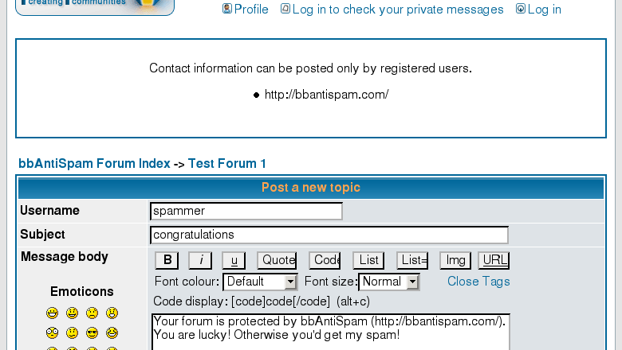

Stop spam from guests in your phpBB forum
Unregistered users can't post contact information. That's all.
It works because spammers always submit links, otherwise there is no reason to spam. Therefore, no links allowed—no opportunity to spam.
Installation
 .
.
Installation instructions are in the file install.txt.
Installation time is less than 1 minute or just few clicks with EasyMOD.
Screenshots

Posting is rejected by Links Rejector
Community edition
One of the best antispam solutions is a community-collected ban list. Once put in the list, the spammer can't spam further.
Links Rejector helps building the ban list. Each time spam registration is rejected, Links Rejector sends a notification to the forum administrator and TO THE COMMUNITY SPAM DATABASE. Example.
Benefit the community, install Links Rejector!
Privacy Policy: We do not disclose your individual information to any other company. We collect aggregate statistics on spam texts and spammers' IPs. We may publish or share this aggregate information with other companies. This aggregate data, by its nature, will not reveal your identity.
License: GNU General Public License.
Business edition
Buy a business license to stop the e-mail notifications. The price is only $29.95.


Payments are processed by Plimus Corporation, a well-known software store located in the US. The Links Rejector author doesn't have access to your sensitive personal data, such as your credit card number. The recommended payment method is credit card. Alternatives might cause additional fees. European users who want to pay by wire transfer (online banking) without fees, please contact us directly.
Bonus: the license key is valid both for Links Rejector and Textual Confirmation.